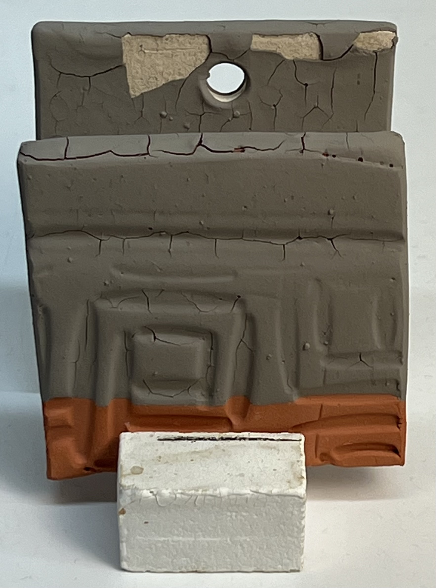
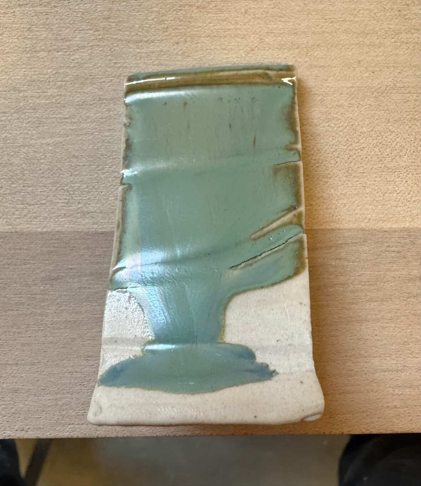
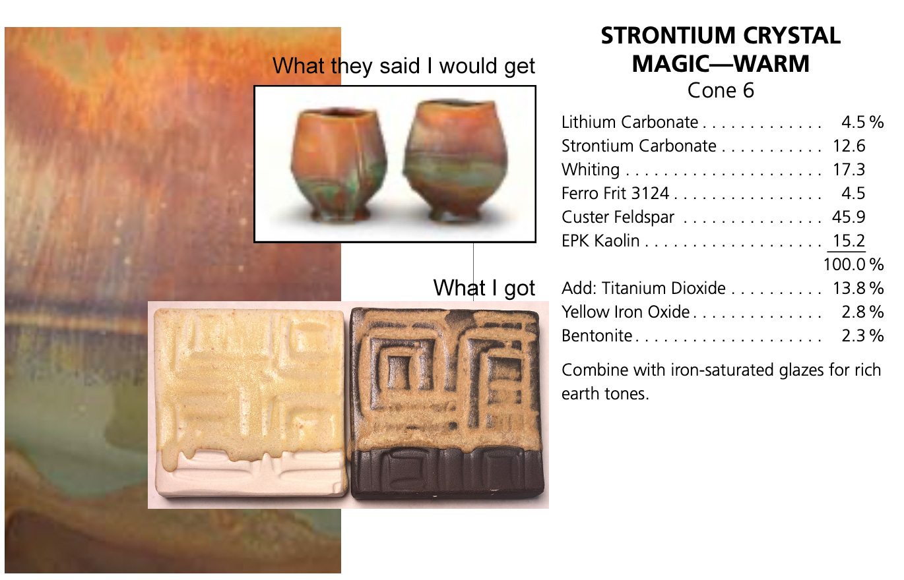
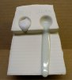
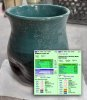
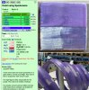
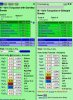

Limit Recipe
"Recipe logic" is the ability to sanity-check ceramic glaze recipes on sight, by noting that materials present and their relative percentages.
Key phrases linking here: unbalanced recipes, unbalanced recipe, balanced recipes, balanced recipe, recipe limits, limit recipes, sanity-checks, limit recipe, sanity check, recipe logic - Learn more
Details
A "limit recipe" is a sanity check. It is "recipe logic". The concept in ceramics applies to recipes of glazes, engobes, underglazes and to clay body recipes and casting slip recipes. This page deals with glazes.
There is a proliferation of pottery glaze recipes online, many of which just don’t work for functional ware. Or which impact the safety, strength and quality of your ware. Admittedly, many recipes have accompanying warnings against their use on functional ware. Or notes that they are intended for use as an over-spray to enhance the surface of an existing glaze. However, potters and hobbyists often just want to get the surface they see in a picture!

When glazes do this on drying, there is too much clay in the recipe. That is easily fixable.
The concept of a limit recipe is akin to a limit formula (except it is applied on the physical material level rather than on the oxide chemistry). We expect the percentages of material types to fall within certain ranges for typical glossy and matte functional or service glazes. If they are not, red flags should pop up! Consider some examples:
Glazes need clay to suspend the slurry and harden them on drying. The ideal is 15-20% kaolin or ball clay. This assumes the brands typically used in glazes, e.g. EPK or No. 5 Glaze in North America. Highly plastic clays can do the job at a lower percentage; non-plastic ones require more. Other clays are also used (and clay-like materials like Gerstley Borate). Where clay is lacking, it is common to augment with bentonite, up to 5%. Where more clay is needed (e.g. to supply Al2O3 for a matte), some calcined or roasted clay can be used to keep the raw clay material less than 25%. If the percentage of clay is too high or the type of clay is too plastic, cracking and peeling of the dried layer will result.

A pigmented glaze runs and crystallizes like this on a test tile, question its durability and leach resistance.
Middle and low-temperature glazes need significant boron (B2O3) to melt them. It comes from Gerstley borate and frits. What if a glaze has none of these? How will it melt sufficiently? Perhaps it employs zinc or lithium as melters. But these are troublesome. Are you ready for that? The Gerstley Borate (GB) deposit is exhausted as of 2022; it is no more, so there is no point putting effort into glazes containing it. It also presents serious issues in slurry usability and should be avoided anyway. There are GB substitutes that likely use Ulexite or Colemanite, and they may or may not work, but frits are superior. There are lots of pages on this site about how to source boron from a frit instead.
It is very common to see high feldspar percentages (up to 80%) in stoneware glazes. 30% is normal, 50% is not. There are very few circumstances in which excessive feldspar does not produce crazing.
Does a recipe contain “borax frit”? That is like a cake recipe containing “a grain flour”. Which one? There are hundreds of borax frits; they serve temperature ranges from cone 010 to 10. Which one? Some contain 2% B2O3, others 30%. The other 98% or 70% could be anything.
When you see a glaze containing 50% feldspar, a "crazing red light" should go on in your head.
Does it contain materials you have never heard of or used? Is there information there to explain their purpose? Does it contain significant bone ash? Bone ash is a phosphate, generally used for non-functional pigmented surfaces. It is not typical in glazes and not well studied or understood, especially for functional ware.
It is normal to see 1% cobalt, it is a powerful colorant. And super expensive. But if there is 5%, that is crazy for functional ware; it is a leaching hazard. 3% copper oxide is normal; 10% is not. Carbonate colors (like copper, cobalt) are trouble; they gas during firing and produce blisters (the oxide forms are better). Stains are better yet.
Does it contain titanium dioxide or rutile? These are used to variegate surfaces, and it is normal to see up to about 5%. In excess of this will cause heavy crystallization of the surface, inducing issues with cutlery marking and staining.
Barium carbonate at 5% might be OK, but 20% is going to produce a toxic glaze. Lithium carbonate likewise.
High percentages of calcium carbonate or dolomite? They gas like mad; can you source CaO and MgO from wollastonite and talc instead?
Are you going to do multi-layering? You cannot just take any recipe found online and expect it to be suitable for multi-layering or as a first-coat dipping glaze.
Another aspect where recipe logic applies is the practice of having a dozen, or dozens, of completely different recipes in your operation. Learn from what commercial glaze manufacturers do. They use base recipes, for example, a transparent one; to that they add pigments, opacifiers and variegators. They use frits and stains; they are less troublesome and safer than raw fluxing materials (like lithium carbonate, calcium carbonate, zinc oxide, strontium carbonate, barium carbonate) and raw metallic carbonates and oxides (like copper, cobalt, chrome, iron). Worry about finding ways to save money later by adjusting a working recipe.
Equipped with recipe logic, you will quickly be able to predict glazes likely to craze, leach, run, settle, crystallize, pinhole, bubble and blister. For artists, the opposite can also be true; they often seek these effects as part of an aesthetic.
Related Information
Glaze recipes online waiting for a victim to try them!

This picture has its own page with more detail, click here to see it.
You found some recipes. Their photos looked great, you bought $500 of materials to try them, but none worked! Why? Consider these recipes. Many have 50+% feldspar/Cornwall/nepheline (with little dolomite or talc to counteract their high thermal expansion, they will craze). Many are high in Gerstley Borate (it will turn the slurry into a bucket of jelly, cause crawling). Others waste high percentages of expensive tin, lithium and cobalt in crappy base recipes. Metal carbonates in some encourage blistering. Some melt too much and run onto the kiln shelf. Some contain almost no clay (they will settle like a rock in the bucket). A better way? Find, or develop, fritted, stable base transparent glossy and matte base recipes that fit your body, have good slurry properties, resist leaching and cutlery marking. Identify the mechanisms (colorants, opacifiers and variegators) in a recipe you want to try and transplant these into your own base (or mix of bases). And use stains for color (instead of metal oxides).
It is possible to spot a leaching glaze just by looking at it!

This picture has its own page with more detail, click here to see it.
This glaze looks too matte, too metallic, too crystalline. This picture was sent to me by a worried person who had bought it and noticed it discolouring on the inside. The potter may very well have considered this safe just because it was fired to cone 10. It is common among potters to overload glazes with raw metal oxide blends, often 15% or more (e.g. manganese, copper, iron, nickel, cobalt). These percentages cannot be held in solution in the melt as it cools and solidifies, so they precipitate out and crystallize, especially if the glaze is not melting well or has insufficient SiO2. The crystalline forms of these metals might look nice to some people, but the glaze is likely to leach them. It is better to use a ceramic stain to create a black like this, adding it to a stable matte base glaze (one that melts well and has sufficient SiO2 and Al2O3 to create a durable glass). The concept of a limit recipe is helpful in eyeballing recipes for their likelihood of leaching.
I made the mistake many others likely do:
Missed the one short descriptive sentence

This picture has its own page with more detail, click here to see it.
This is an example of an online recipe at a respected source. I deal with hundreds of customer glaze issues a year, and people expect recipes to work as shown when no documentation is included (except for "combine with non-saturated glazes for rich earth tones"). And they expect it to be functional.
The first red flag: There is no silica! Running during firing is thus expected (and happening). But it also means poor durability. There is a ton of feldspar; that means a high level of sodium. Without low-expansion MgO to counterbalance its high thermal expansion, the glaze is going to craze. The mechanism of the crystallization is titanium oversupply; with triple the typical it will certainly cutlery mark and stain. Given the unbalanced chemistry, any added colorant will likely be leachable! My slow-cool firing made the surface so dry it was very unpleasant to touch. Maybe this needs fast cooling. But who knows, there are no notes. This does not appear to belong on any functional ware, inside or outside. Someone noted that people use this to produce layering effects (see links). That begs documentation on how that would work. Without gum, would it lift and crawl as layers are added over it. Would you have to overlay every square inch? Would it still craze? All the how-to information needed to make it work is more important than the recipe itself.
A down side of high feldspar glazes: Crazing!

This picture has its own page with more detail, click here to see it.
This reduction celadon is crazing. Why? High feldspar. Feldspar supplies the oxides K2O and Na2O, they contribute the brilliant gloss and great color but the price is very high thermal expansion. Scores of recipes being traded online are high-feldspar, some more than 50%! There are ways to tolerate the high expansion of KNaO, but the vast majority are crazing on all but high quartz bodies. Crazing is a plague for potters. Ware strength suffers dramatically, pieces leak, the glaze can harbor bacteria and customers return pieces. The simplest fix is to transplant the color and opacity mechanism into a better transparent, one that fits your ware (in this glaze, for example, the mechanism is simply an iron addition). Fixing the recipe may also be practical. A 2:1 mix of silica:kaolin has the same Si:Al ratio as most glossy glazes, this glaze could possibly tolerate 10% of that. That would reduce running, improve fit and increase durability. Failing that, the next step is to substitute some of the high-expansion KNaO, the flux, for the low-expansion MgO, that requires doing some glaze chemistry.
A high feldspar glaze is settling, running and crazing. What to do?

This picture has its own page with more detail, click here to see it.
The original cone 6 recipe, WCB, fires to a beautiful brilliant deep blue green (shown in column 2 of this Insight-live screen-shot). But it is crazing and settling badly in the bucket. The crazing is because of high KNaO (potassium and sodium from the high feldspar). The settling is because there is almost no clay in the recipe. Adjustment 1 (column 3 in the picture) eliminates the feldspar and sources Al2O3 from kaolin and KNaO from Frit 3110 (preserving the glaze's chemistry). To make that happen the amounts of other materials had to be juggled. But the fired test revealed that this one, although very similar, is melting more (because the frit releases its oxides more readily than feldspar). Adjustment 2 (column 4) proposes a 10-part silica addition. SiO2 is the glass former, the more a glaze will accept without losing the intended visual character, the better. The result is less running and more durability and resistance to leaching.
The LOI of Gerstley Borate is a big deal
Here is how much it can affect a glaze

This picture has its own page with more detail, click here to see it.
Fired at cone 6. The samples on the bottom tiles are from ten-gram balls that have melted down (in our GBMF test). These glazes have the same chemistry, but the one of the left sources its B2O3 from Gerstley Borate (which has a high LOI). The one on the right gets it from a frit. Because the fritted version has less gases of decomposition to expel, the glass is much smoother. Curiously, the fritted version is flowing less and the red color has been lost. Why? This could be because the Al2O3, which stabilizes glazes against excessive fluidity, is being dissolved into the melt better and thus is more available for glass building.
The traffic in glaze recipes may burn your success!
This picture has its own page with more detail, click here to see it.
Do you mix your own recipes? That's great, but the right approach to DIY is important. Online recipes might look great on a fancy website, but what are the chances they will actually fire the way they look in the picture? Or work in your circumstances? Did the contributor know the mechanism or give any sort of directions or cautions? After trying many glazes you may think you have found one that works. But does it really? How does it hold up to limit recipes? Does it have a balanced chemistry? Is it erratic and unreliable in firing? Difficult to use? Does it leach or craze or shiver or pinhole or blister? Or make you endure other problems? Be critical and cautious about foreign recipes. Most often it is better to find a base recipe, adjust and perfect it to your clay body, then add colorants, opacifiers and variegators.
We fight the dragon that others do not see

This picture has its own page with more detail, click here to see it.
There are thousands of ceramic glaze recipes floating around the internet. People dream of finding that perfect one, but they often only think about the visual appearance, not of the usability, function, safety, cost or materials. That resistance to understanding your materials and glazes and learning to take control is what we personify as the dragon. Using the resources on this site you could be fixing, adjusting, testing, formulating your own glaze recipes. Start with your own account at insight-live.com.
Inbound Photo Links
 The first of 15 "Fool-Proof Recipes": Wrecked my kiln shelf! |
 Before spending time trying online recipes, take a minute to do a sanity check on them |
EU Food Contact testing limits are changing - 2021 |
 High feldspar glazes craze. Don't put up with it. Fix them. |
 Sanity checking a cone 6 purple pottery glaze |
 Feeling good about the glazes we use on functional surfaces |
Links
| Glossary |
Limit Formula
A way of establishing guideline for each oxide in the chemistry for different ceramic glaze types. Understanding the roles of each oxide and the limits of this approach are a key to effectively using these guidelines. |
| Glossary |
Mechanism
Identifying the mechanism of a ceramic glaze recipe is the key to moving adjusting it, fixing it, reverse engineering it, even avoiding it! |
| Glossary |
Food Safe
Be skeptical of claims of food safety from potters who cannot explain or demonstrate why. Investigate the basis of manufacturer claims and labelling and the actual use to which their products are put. |
| Glossary |
Glaze Recipes
Stop! Think! Do not get addicted to the trafficking in online glaze recipes. Learn to make your own or adjust/adapt/fix what you find online. |
| Glossary |
Frit
Frits are used in ceramic glazes for a wide range of reasons. They are man-made glass powders of controlled chemistry with many advantages over raw materials. |
| Glossary |
LOI
Loss on Ignition is a number that appears on the data sheets of ceramic materials. It refers to the amount of weight the material loses as it decomposes to release water vapor and various gases during firing. |
| Glossary |
Ceramic Stain
Ceramic stains are manufactured powders. They are used as an alternative to employing metal oxide powders and have many advantages. |
| Glossary |
Brushing Glaze
Hobbyists and increasing numbers of potters use commercial paint-on glazes. It's convenient, there are lots of visual effects. There are also issues compared to dipping glazes. You can also make your own. |
| Glossary |
Dipping Glaze
In traditional ceramics and pottery dipping glazes can be of two main types: For single layer and for application of other layers overtop. Understanding the difference is important. |
| Glossary |
Triaxial Glaze Blending
In ceramics many technicians develop and adjust glazes by blending two, three or even four l materials or glazes together to obtain new effects |
| Articles |
Trafficking in Glaze Recipes
The trade is glaze recipes has spawned generations of potters going up blind alleys trying recipes that don't work and living with ones that are much more trouble than they are worth. It is time to leave this behind and take control. |
| Articles |
Glaze Recipes: Formulate and Make Your Own Instead
The only way you will ever get the glaze you really need is to formulate your own. The longer you stay on the glaze recipe treadmill the more time you waste. |
 PayPal | No tracking, No ads, No paywall, No transient content! Just organized, concise information constantly updated and improved. Was this helpful? Consider supporting me. |
| By Tony Hansen Follow me on        |  |
Got a Question?
Buy me a coffee and we can talk 

https://digitalfire.com, All Rights Reserved
Privacy Policy